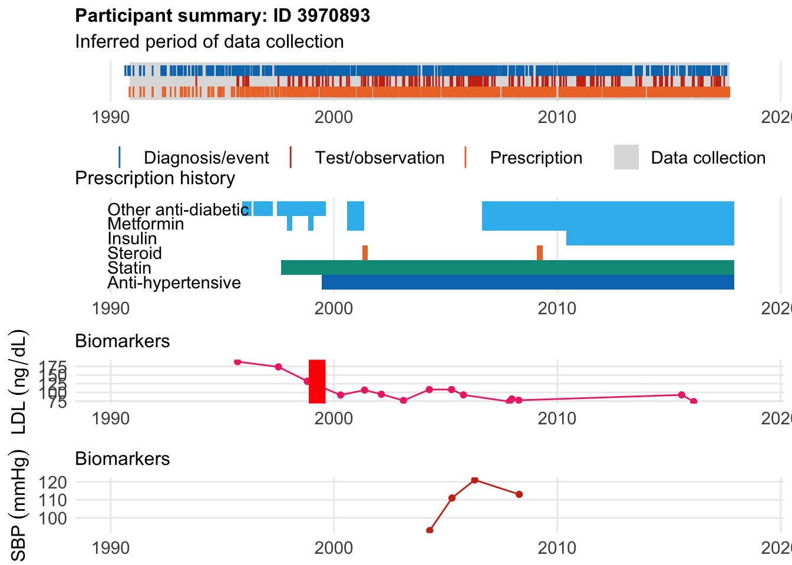

Last updated: 2023-03-12
Checks: 6 1
Knit directory: multistate/
This reproducible R Markdown analysis was created with workflowr (version 1.7.0). The Checks tab describes the reproducibility checks that were applied when the results were created. The Past versions tab lists the development history.
The R Markdown file has unstaged changes. To know which version of
the R Markdown file created these results, you’ll want to first commit
it to the Git repo. If you’re still working on the analysis, you can
ignore this warning. When you’re finished, you can run
wflow_publish to commit the R Markdown file and build the
HTML.
Great job! The global environment was empty. Objects defined in the global environment can affect the analysis in your R Markdown file in unknown ways. For reproduciblity it’s best to always run the code in an empty environment.
The command set.seed(20230211) was run prior to running
the code in the R Markdown file. Setting a seed ensures that any results
that rely on randomness, e.g. subsampling or permutations, are
reproducible.
Great job! Recording the operating system, R version, and package versions is critical for reproducibility.
Nice! There were no cached chunks for this analysis, so you can be confident that you successfully produced the results during this run.
Great job! Using relative paths to the files within your workflowr project makes it easier to run your code on other machines.
Great! You are using Git for version control. Tracking code development and connecting the code version to the results is critical for reproducibility.
The results in this page were generated with repository version d51abfe. See the Past versions tab to see a history of the changes made to the R Markdown and HTML files.
Note that you need to be careful to ensure that all relevant files for
the analysis have been committed to Git prior to generating the results
(you can use wflow_publish or
wflow_git_commit). workflowr only checks the R Markdown
file, but you know if there are other scripts or data files that it
depends on. Below is the status of the Git repository when the results
were generated:
Untracked files:
Untracked: analysis/missing_code.tsv
Unstaged changes:
Modified: .DS_Store
Deleted: Health_toCadbinom.png
Modified: analysis/lipid_effect.Rmd
Modified: analysis/modeglm.Rmd
Modified: code/fullarray copy.R
Deleted: oneRF_toCadbinom.png
Deleted: threeRF_toCadbinom.png
Deleted: twoRF_toCadbinom.png
Note that any generated files, e.g. HTML, png, CSS, etc., are not included in this status report because it is ok for generated content to have uncommitted changes.
These are the previous versions of the repository in which changes were
made to the R Markdown (analysis/lipid_effect.Rmd) and HTML
(docs/lipid_effect.html) files. If you’ve configured a
remote Git repository (see ?wflow_git_remote), click on the
hyperlinks in the table below to view the files as they were in that
past version.
| File | Version | Author | Date | Message |
|---|---|---|---|---|
| Rmd | fb02eb5 | Your Name | 2023-02-23 | Update |
| html | fb02eb5 | Your Name | 2023-02-23 | Update |
| Rmd | e25d24e | Your Name | 2023-02-23 | Update |
| html | e25d24e | Your Name | 2023-02-23 | Update |
| Rmd | 6e45111 | Your Name | 2023-02-23 | Update |
| html | 6e45111 | Your Name | 2023-02-23 | Update |
| Rmd | 647ce3e | Your Name | 2023-02-19 | Update |
| html | 647ce3e | Your Name | 2023-02-19 | Update |
| Rmd | bdb99ac | Your Name | 2023-02-17 | update |
| html | bdb99ac | Your Name | 2023-02-17 | update |
| Rmd | e04d656 | Your Name | 2023-02-17 | update |
| Rmd | eb88d09 | Your Name | 2023-02-15 | Update |
| html | eb88d09 | Your Name | 2023-02-15 | Update |
| Rmd | dbae012 | Your Name | 2023-02-15 | Update |
| html | dbae012 | Your Name | 2023-02-15 | Update |
| Rmd | 0e0ef8e | Your Name | 2023-02-13 | update |
| html | 0e0ef8e | Your Name | 2023-02-13 | update |
| Rmd | 9004072 | Your Name | 2023-02-13 | update |
| html | 9004072 | Your Name | 2023-02-13 | update |
| Rmd | a7ebbe4 | Your Name | 2023-02-12 | update |
| html | a7ebbe4 | Your Name | 2023-02-12 | update |
| Rmd | 9269fd3 | Your Name | 2023-02-12 | update |
| html | 9269fd3 | Your Name | 2023-02-12 | update |
One of the aims of joint analysis is to capture the error of an individuals’ measurement’s, the inherent challenges of the fact that to contribute to a covariate measurement once must have survived to time s and thus the existence of the longitudinal endogenous covariate is not independent from the survival fucniton. We also consdier the challenges of not including medication effects in biomarker assessment and reasons for prescribing. For example, if we look at the diagnostic codes for someone with early onset CAD, we see the clear relationship between CAD and PRS.
[1] "14 traits with dependent trait in Include_definitions"
[1] "4 traits with dependent trait in Exclude_from_cases"
[1] "1 traits with dependent trait in Study_population"
[1] "2 traits with dependent trait in Exclude_from_controls"While PRS is useful, it’s not everything: there are a number of folks who develop preamutre CAD with lower prs levels and no DM
[1] 2923And 0.4425435 of cases under 50 don’t have high prs or DM!
Similarly, 57199 of the folks with high level PRS never go on to develop CAD.
1 2
445268 57193 This guy had event at 48 and started statin at age 44. Not listed as hyperlipidemia, not hypertensive, not diabetic until age 56 … who knows?
$bday
identifier Birthdate
1 1253100 1964-12-15
$diag
.id identifier code eventdate event epidur classification
1 tte.gpclinical.read3 1253100 XE2uV 2012-02-07 1 NA CTV3
$statin
eid from to category type mage age_cat stat
1 1253100 2008-08-19 2014-06-07 statins any 44 2 1
2 1253100 2014-06-20 2016-05-15 statins any 50 3 1
3 1253100 2016-06-15 2016-09-12 statins any 52 4 1
Here’s someone who was on an antipyschotic, developed CAD at age 48
$bday
identifier Birthdate
1 1890941 1964-08-15
$diag
.id identifier code eventdate event epidur
1 tte.hesin.icd10.secondary 1890941 I259 2013-06-06 1 0
classification
1 ICD10
$statin
eid from to category type mage age_cat stat
1 1890941 2008-10-01 2016-10-11 statins any 44 2 1
Here, we see that our friend had a PRS that was 2.65 SD above baseline, was born in 1958, enrolled in the UKBB in 2009 at age 51. However, he developed CAD at age 47 in Jan 2006, 15 years before being diagnosed with Hypertension.
Finally,he started a statin in June 2007 at age 49.But his first date of CAD diagnosis was in 2006 at age 47.
$bday
identifier Birthdate
1 1037981 1958-08-15
$diag
.id identifier code eventdate event epidur classification
1 ts 1037981 6150==1[3894] 2006-01-30 2 NA TS
$statin
eid from to category type mage age_cat stat
1 1037981 2007-01-09 2009-06-20 statins any 49 3 1
2 1037981 2009-06-29 2013-09-18 statins any 51 4 1
3 1037981 2013-10-23 2014-10-04 statins any 55 4 1
4 1037981 2014-10-15 2016-08-24 statins any 56 5 1
There are also other where folks started meds before disease: The first patient had an MI at age 34 after starting meds at age 32.
$bday
identifier Birthdate
1 3970893 1965-04-15
$diag
.id identifier code eventdate event epidur classification
1 ts 3970893 6150==1[3894] 1999-04-01 2 NA TS
$statin
eid from to category type mage age_cat stat
1 3970893 1997-08-18 2010-02-03 statins any 32 1 1
2 3970893 2010-02-04 2017-12-06 statins any 45 2 1
The second patient was diagnosted at age 40, 5 years after starting a statin.
$bday
identifier Birthdate
1 5799285 1965-07-15
$diag
.id identifier code eventdate event epidur
1 tte.hesin.icd10.primary 5799285 I251 2005-04-13 1 0
classification
1 ICD10
$statin
eid from to category type mage age_cat stat
1 5799285 2000-08-02 2010-03-07 statins any 35 1 1
As you might interf from the prescribing info both were diabetic.
This is consistent with his use of diagnostic codes. So genetics would key us in to his disease long before lab measurement.
Let’s look at some non diabetes and look at two examples who started statins before and two after. The first example has hypercholesterolemia:
$bday
identifier Birthdate
1 5799710 1942-02-15
$diag
.id identifier code eventdate event epidur classification
1 tte.gpclinical.read3 5799710 XE2uV 2013-01-03 1 NA CTV3
$statin
eid from to category type mage age_cat stat
1 5799710 1999-06-01 2003-11-24 statins any 57 5 1
2 5799710 2003-11-26 2012-03-17 statins any 61 6 1
3 5799710 2012-03-20 2012-06-17 statins any 70 7 1
4 5799710 2012-07-16 2016-08-10 statins any 70 7 1
The second example had his event at age 43, and only after started receiving LDL measurements. He was recorded as hypercholesterolemia at a young age but we don’t have LDL measurements
$bday
identifier Birthdate
1 3342242 1952-04-15
$diag
.id identifier code eventdate event epidur classification
1 tte.gpclinical.read3 3342242 XE2uV 1995-12-28 1 NA CTV3
$statin
eid from to category type mage age_cat stat
1 3342242 1990-06-19 1990-09-16 statins any 38 1 1
2 3342242 1992-06-01 1992-08-29 statins any 40 1 1
3 3342242 1995-12-28 1997-08-11 statins any 43 2 1
4 3342242 1997-08-21 1998-03-08 statins any 45 2 1
5 3342242 1998-04-09 2002-11-17 statins any 46 3 1
6 3342242 2002-12-16 2003-09-27 statins any 50 3 1
7 3342242 2003-10-06 2006-01-28 statins any 51 4 1
8 3342242 2006-02-02 2006-10-07 statins any 54 4 1
9 3342242 2006-10-18 2010-04-17 statins any 54 4 1
10 3342242 2010-05-10 2013-06-11 statins any 58 5 1
11 3342242 2013-07-15 2014-02-15 statins any 61 6 1
12 3342242 2014-02-26 2015-08-24 statins any 62 6 1
13 3342242 2015-09-01 2016-08-06 statins any 63 6 1
Here’s someone who started a statin 16 years before:
$bday
identifier Birthdate
1 3988526 1944-07-15
$diag
.id identifier code eventdate event epidur classification
1 tte.gpclinical.read2 3988526 G33.. 2016-06-26 1 NA READ2
$statin
eid from to category type mage age_cat stat
1 3988526 1996-01-02 1996-08-12 statins any 52 4 1
2 3988526 1996-09-18 1997-03-03 statins any 52 4 1
3 3988526 1997-04-09 1997-07-07 statins any 53 4 1
4 3988526 1997-08-14 1998-01-12 statins any 53 4 1
5 3988526 1998-03-13 1998-06-10 statins any 54 4 1
6 3988526 1998-07-08 1998-10-05 statins any 54 4 1
7 3988526 1998-11-11 1999-02-08 statins any 54 4 1
8 3988526 1999-03-03 1999-08-09 statins any 55 4 1
9 3988526 1999-09-10 2000-02-02 statins any 55 4 1
10 3988526 2000-03-01 2000-05-29 statins any 56 5 1
11 3988526 2000-07-04 2000-10-01 statins any 56 5 1
12 3988526 2000-11-03 2001-01-31 statins any 56 5 1
13 3988526 2001-03-19 2001-09-12 statins any 57 5 1
14 3988526 2001-10-11 2002-01-08 statins any 57 5 1
15 3988526 2002-02-25 2003-05-04 statins any 58 5 1
16 3988526 2003-05-06 2004-02-17 statins any 59 5 1
17 3988526 2004-03-19 2004-06-16 statins any 60 5 1
18 3988526 2004-07-05 2005-08-15 statins any 60 5 1
19 3988526 2005-09-07 2007-06-02 statins any 61 6 1
20 3988526 2007-08-16 2007-11-13 statins any 63 6 1
21 3988526 2007-12-12 2008-04-19 statins any 63 6 1
22 3988526 2008-05-22 2008-10-19 statins any 64 6 1
23 3988526 2008-10-20 2009-02-17 statins any 64 6 1
24 3988526 2009-03-16 2009-10-11 statins any 65 6 1
25 3988526 2009-10-27 2010-01-24 statins any 65 6 1
26 3988526 2010-02-16 2010-08-31 statins any 66 7 1
27 3988526 2010-11-08 2013-09-07 statins any 66 7 1
28 3988526 2013-11-05 2017-08-29 statins any 69 7 1
| Version | Author | Date |
|---|---|---|
| e25d24e | Your Name | 2023-02-23 |
And here is
$bday
identifier Birthdate
1 1002769 1949-10-15
$diag
.id identifier code eventdate event epidur
1 tte.hesin.icd10.secondary 1002769 I259 2013-04-18 1 0
classification
1 ICD10
$statin
eid from to category type mage age_cat stat
1 1002769 2009-06-23 2016-09-11 statins any 60 5 1
| Version | Author | Date |
|---|---|---|
| e25d24e | Your Name | 2023-02-23 |
First we look at someone who started statin after disease. We see that he didn’t start a statin until 1.5 years after diagnsosis, thus obscruing the relationship between CAD and statin benefit, as well as lipid levels and CAD. We then find someone who have started before:
$bday
identifier Birthdate
1 2773314 1953-05-15
$diag
.id identifier code eventdate event epidur classification
1 tte.sr.20004 2773314 1095 1993-07-02 1 NA f.20004
$statin
eid from to category type mage age_cat stat
1 2773314 1995-07-07 1998-03-08 statins any 42 2 1
2 2773314 1998-05-26 2001-05-26 statins any 45 2 1
3 2773314 2001-07-16 2018-01-09 statins any 48 3 1
| Version | Author | Date |
|---|---|---|
| e25d24e | Your Name | 2023-02-23 |
R version 4.2.1 (2022-06-23)
Platform: x86_64-apple-darwin17.0 (64-bit)
Running under: macOS Big Sur ... 10.16
Matrix products: default
BLAS: /Library/Frameworks/R.framework/Versions/4.2/Resources/lib/libRblas.0.dylib
LAPACK: /Library/Frameworks/R.framework/Versions/4.2/Resources/lib/libRlapack.dylib
locale:
[1] en_US.UTF-8/en_US.UTF-8/en_US.UTF-8/C/en_US.UTF-8/en_US.UTF-8
attached base packages:
[1] stats graphics grDevices utils datasets methods base
other attached packages:
[1] cowplot_1.1.1 plyr_1.8.7 lubridate_1.8.0
[4] tidyr_1.2.1 dplyr_1.0.10 survival_3.4-0
[7] ggplot2_3.4.1 ukbpheno_0.0.0.9000 data.table_1.14.2
loaded via a namespace (and not attached):
[1] tidyselect_1.2.0 xfun_0.33 bslib_0.4.0 purrr_0.3.5
[5] splines_4.2.1 lattice_0.20-45 colorspace_2.0-3 vctrs_0.5.2
[9] generics_0.1.3 htmltools_0.5.3 yaml_2.3.5 utf8_1.2.2
[13] rlang_1.0.6 jquerylib_0.1.4 later_1.3.0 pillar_1.8.1
[17] glue_1.6.2 withr_2.5.0 DBI_1.1.3 bit64_4.0.5
[21] lifecycle_1.0.3 stringr_1.4.1 munsell_0.5.0 gtable_0.3.1
[25] workflowr_1.7.0 evaluate_0.17 labeling_0.4.2 knitr_1.40
[29] fastmap_1.1.0 httpuv_1.6.6 fansi_1.0.3 highr_0.9
[33] Rcpp_1.0.9 promises_1.2.0.1 scales_1.2.1 cachem_1.0.6
[37] jsonlite_1.8.2 farver_2.1.1 bit_4.0.4 fs_1.5.2
[41] digest_0.6.29 stringi_1.7.8 rprojroot_2.0.3 grid_4.2.1
[45] cli_3.4.1 tools_4.2.1 magrittr_2.0.3 sass_0.4.2
[49] tibble_3.1.8 whisker_0.4 pkgconfig_2.0.3 Matrix_1.5-1
[53] assertthat_0.2.1 rmarkdown_2.17 rstudioapi_0.14 R6_2.5.1
[57] git2r_0.30.1 compiler_4.2.1